Medical world models for gaitLearn normal motion, then test unfamiliar gait
A reproducible tutorial study for the Medical World Models workshop. All diagrams describe the protocol, not demonstrated clinical performance.
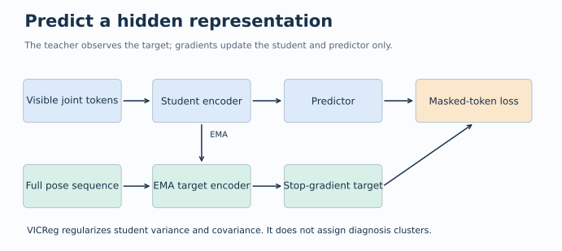
Start with the current GAVD inventory
Read all transformed annotations fresh. The requested labels define a focused five-class benchmark; other abnormal gaits remain outside the primary claim.
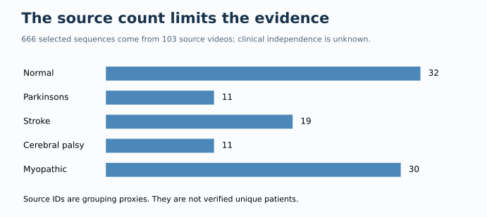
Protect the evaluation before making windows
Original source videos stay in one partition. Fit models on training sources, choose settings on validation sources, then report the held-out test.
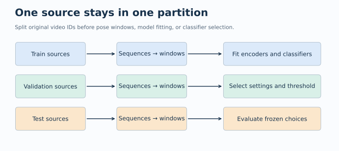
Map videos to explicit skeletal observations
Use Ambient extraction and one-based GAVD frames. Keep image dimensions, timestamps, confidence and missingness. Watch the source excerpt before trusting an extracted pose.
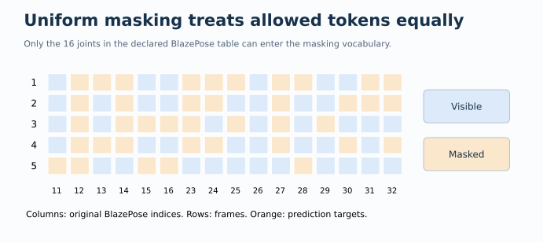
Mask only the declared sixteen joints
Uniform random masks never use velocity or motion magnitude. This is an intentional adaptation of the motion-aware published methods.
The student learns to predict a teacher target
The target encoder follows an exponential moving average. The predictor reconstructs masked target representations. Gradients never flow through teacher targets.
Prevent collapse without inventing clinical clusters
Variance and covariance regularization maintain useful variation. Label separation comes from a supervised probe or an explicitly supervised objective.
A future forecast needs a withheld suffix
Train and evaluate a suffix mask explicitly. A bidirectional masked completion can use later observations and cannot establish forecasting ability.
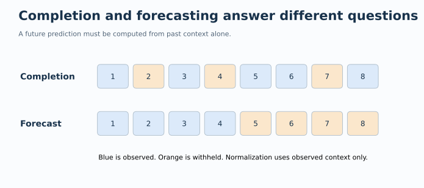
Keep the normal reference frozen
Train on normal sources first. Save the reference, copy it, and add each condition in stages with normal replay. The reference remains the anomaly detector.
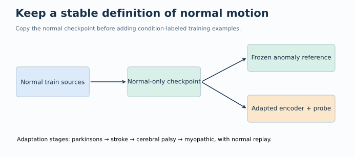
Test stochasticity through controlled experiments
Positional jitter perturbs token locations. A conditional latent variable can represent multiple possible futures. Neither guarantees calibrated uncertainty.
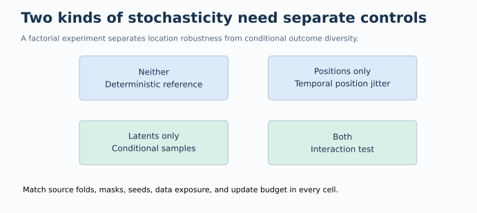
Use the same cohort for RF and JEPA
Classify five labels and the binary endpoint. Use training-only imputation and scaling, equal source weighting, and validation-based choices.
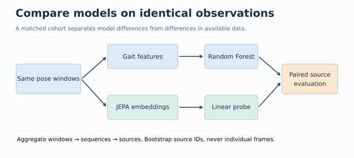
Report evidence at the source level
Include support, balanced accuracy, per-class recall, AUROC, threshold sensitivity and specificity, paired uncertainty and representative failures.
Treat GAVD as exploratory medical evidence
Unknown participant overlap, camera variation and web selection limit generalization. A source split cannot establish prospective clinical performance.
Build the paper from completed evidence
Inspect artifacts and the run ledger before writing results. If empirical evidence is incomplete, the workshop allows a position-paper route. Verify current submission requirements.
The primary classifier comparison remains uncertain
Mixed JEPA balanced accuracy is 0.818 versus RF 0.788 on 17 sources. The paired difference is 0.030, with a 95% interval from -0.189 to 0.250. Staged JEPA is secondary.
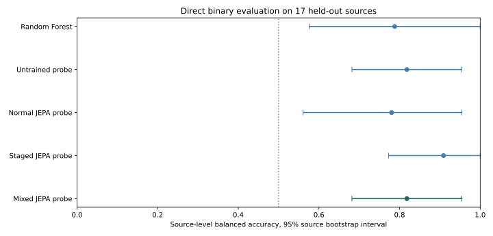
Persistence remains a demanding forecast reference
Three training seeds, six normal test sources. The residual mean gain is 0.000513 with an interval crossing zero. Replacing ordered context with a static prefix improves residual error.
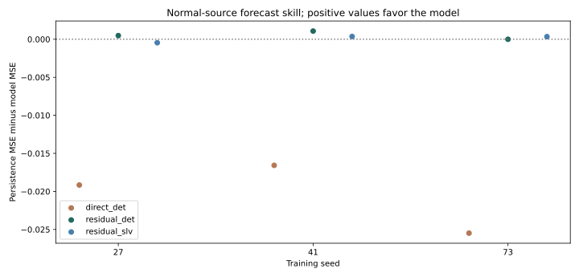
Anomaly ranking and forecast skill separate
All nine prespecified scores are shown on 19 sources. The direct model has poor forecast skill but a strong excess-error ranking. This supports a controlled case study, with no claim that the best score proves useful dynamics.
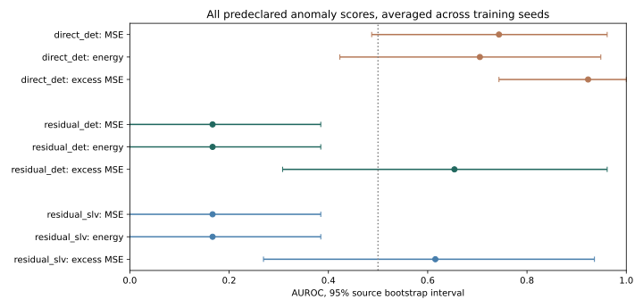
Distribution quality and uncertainty ranking separate
Latent samples improve the energy score across all three seeds. Their error-deferral ranking is worse than prefix confidence on the six normal sources. Neither result establishes clinical calibration.
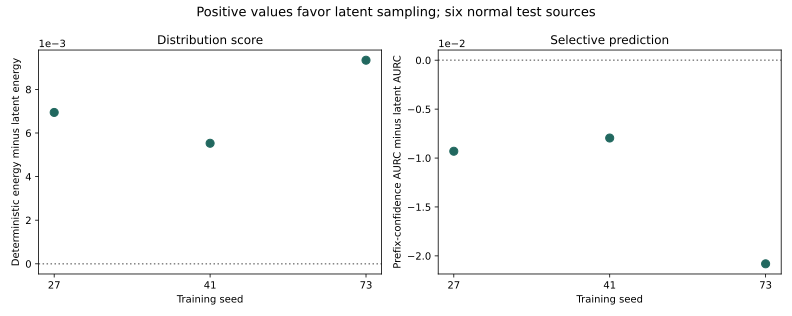
Read the endpoints separately
Binary annotation screening and five-condition recognition have different targets and decision rules. These are point estimates; paired intervals and source support are in the report.
| Model | Binary BA | Binary AUROC | Five-class BA |
|---|
| Random Forest | 0.788 | 0.894 | 0.400 |
| Untrained probe | 0.818 | 0.788 | 0.567 |
| Normal JEPA | 0.780 | 0.742 | 0.567 |
| Staged JEPA (secondary) | 0.909 | 0.909 | 0.433 |
| Mixed JEPA (primary) | 0.818 | 0.848 | 0.467 |
Keep the two study cohorts distinct
Every source stays in its original split. Short-window person gating and longer forecast support lead to different retained test sets. Windows are not independent patients.
| Observation contract | Sequences | Train sources | Validation sources | Test sources |
|---|
| 16-frame classifier | 405 | 53 | 19 | 17 |
| 32-frame forecast | 407 | 53 | 19 | 19 |